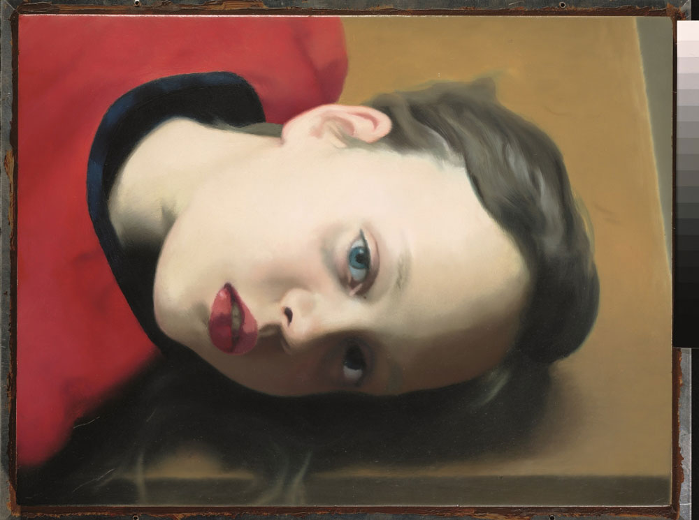
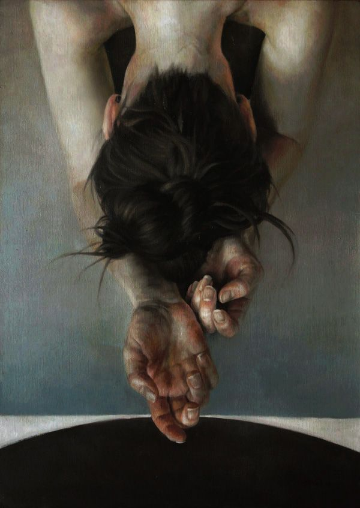

Гиперреализм
Гиперреализм — направление в искусстве, ассоциировавшееся первоначально с творчеством европейских фотореалистов 1970-х годов, а затем осмысленное более широко как течения в разных видах современного искусства — живописи, скульптуре и кинематографии конца XX — начала XXI века.
При всей детализации и буквальном следовании внешнему виду объектов, гиперреалисты не стремятся копировать реальность. Вместе с тем их картины нередко напоминают снимки в instagram: чужие лица, прогулки с друзьями, улочки, автопортреты, снимки собственных кистей или кед, приукрашенные различными компьютерными обработками и фильтрами. Глядя на эти работы, не всегда можно понять, что перед тобой — работа кисти, а не фотокамеры. Однако их работы — скорее, симуляция той реальности, которая могла бы случиться.
Термин впервые использовался в 1973 году для названия выставки в Брюсселе, объединившей работы именитых фотореалистов и молодых художников, которые позже стали главными гиперреалистами: Герарда Рихтера, Клафека, Делкола и других. Многие гиперреалисты заимствуют приемы из других стилей. К примеру, Чак Клоуз умело добавляет к своему творчеству наработки пуантилизма, а Готфрид Хельнвайн использует образы поп-арта или смешивает современные сюжеты с классическими библейскими, причем в дерзкой форме. Кроме того, художник работает с темами украденного детства, милитаризма и другими мотивами, способными эпатировать и шокировать.

Классический пример — портрет девочки Бетти работы Герхарда Рихтера. Казалось бы, работа выглядит как «портрет, снятый на фотокамеру». Но при этом есть нечто неуловимое во взгляде героини, ее позе, повороте головы — то, что создает атмосферу загадки, мистики. Этот «спецэффект» можно передать только с помощью красок.
Отличие данного стиля от реализма легче понять, рассмотрев примеры. Картина Мане «Завтрак в мастерской» — это фиксация окружающей действительности, а работа Трулса Эспедаля — фиксация реальности, пропущенной через фильтр эмоций автора. Второй признак принадлежности стилю «гиперреализм» — дата создания. Популярность реализма волнообразна, последний пик пришелся на вторую половину XIX века. А вот гиперреализм — явление и вовсе молодое.

Где смотреть: работы Чака Клоуза, Дона Эдди, Ричарда Эстеса — Музей Метрополитен, Музей Гуггенхайма (Нью-Йорк, США).